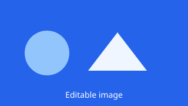
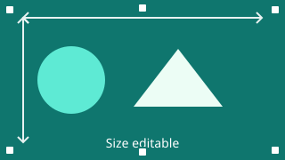
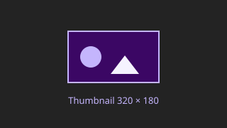

Every marker that makes a page editable is shown here on a live example, with the HTML that produces it. The navigation stays short on purpose; the documentation links here.
<h1 data-jaco-line>A single line</h1>A single-line marker is intended for headings and short labels.
<div data-jaco-block><p>Text with <strong>formatting</strong>.</p></div>A rich-text block supports bold, italic, links, lists and embedded videos. The whole block is edited in one place.
<!-- in a text block, added through the video dialog -->
<iframe src="https://www.youtube-nocookie.com/embed/VIDEO_ID"></iframe>A video is added from a text block with the video button in the toolbar.
<a href="download.html" data-jaco-link>Same tab</a>
<a href="download.html" target="_blank" data-jaco-link>New tab</a>Both the URL and target are changed through the link dialog.
<img data-jaco-image src="media/team.jpg" width="320" height="180">
The file is replaced; width and height stay as they are in the HTML.
<img data-jaco-image data-jaco-image--resizable src="media/team.jpg" width="400" height="225">
The file is replaced and the width and height can be changed in the editor – the handles stand for that.
<a href="shop.html" data-jaco-link>
<img data-jaco-image src="media/team.jpg" width="320" height="180">
</a>The image and the link are edited separately: click the image for the file, the surrounding link for its target. This link opens in a new tab, which the link dialog sets.
<img data-jaco-image data-jaco-image--lightbox
src="media/team.jpg" width="320" height="180">
<!-- after saving: the server writes media/team-full.jpg and links it -->
<a href="media/team-full.jpg">
<img data-jaco-image data-jaco-image--lightbox
src="media/team.jpg" width="320" height="180">
</a>
The thumbnail is a small file; the gallery marker writes a second, full-size one and links the thumbnail to it. Replacing the image replaces both. A gallery image wrapped in a link to a page keeps that link and gets no new full-size file.
<img data-jaco-image data-jaco-image--resizable data-jaco-image--lightbox
src="media/team.jpg" width="320" height="180">The two properties are independent: the lightbox writes the full file, resizable adds the size and alt-text tools. Both apply to the same image.
The four lists use the same block template but different insertion positions.
<div data-jaco-repeater
data-jaco-repeater--fragment="element-block-en.html"
data-jaco-repeater--label="Add top block"
data-jaco-repeater--add="top">
<div data-jaco-repeater-item>…</div>
</div>New blocks are inserted at the top.
<div data-jaco-repeater
data-jaco-repeater--fragment="element-block-en.html"
data-jaco-repeater--label="Add bottom block"
data-jaco-repeater--add="bottom">
<div data-jaco-repeater-item>…</div>
</div>New blocks are inserted at the bottom.
<div data-jaco-repeater
data-jaco-repeater--fragment="element-block-en.html"
data-jaco-repeater--label="Add block here"
data-jaco-repeater--add="any">
<div data-jaco-repeater-item>…</div>
</div>An add button appears before every block and after the last one.
Use this position when order matters less than placing a block next to another one.
<div data-jaco-repeater
data-jaco-repeater--fragment="element-block-en.html"
data-jaco-repeater--label="Add draggable block"
data-jaco-repeater--add="top" data-jaco-repeater--sortable>
<div data-jaco-repeater-item>…</div>
</div>This block can be reordered with the grip handle.
Drag a block to change its order.
A site template is one marked root element, maintained under Content → Templates. "Apply to all" replaces every element that carries the same name across the project — the navigation and the footer on this page are examples of it.
<footer data-jaco-template="footer-en.html">…</footer>The value is the file name in jaco-data/templates/site/, extension included.